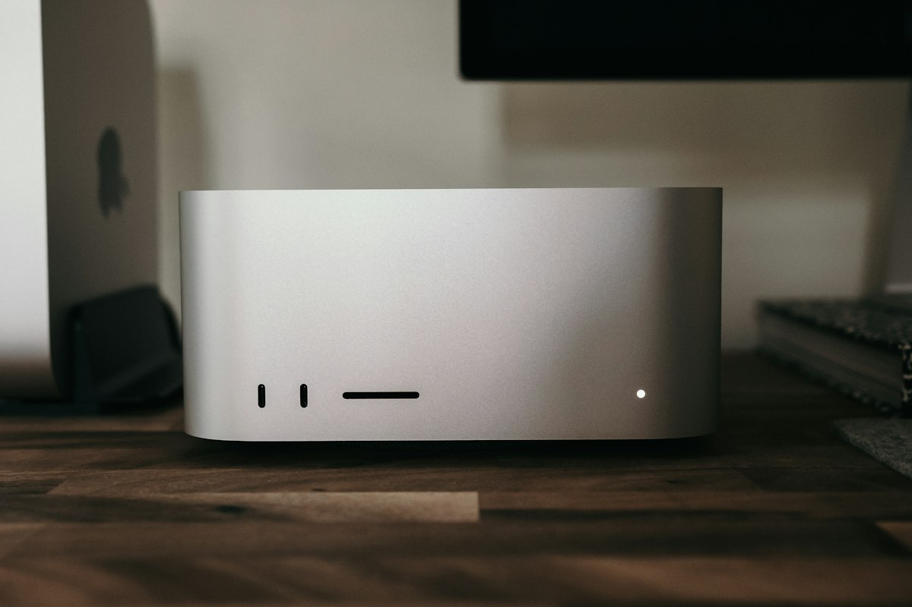

Privacidad total
Tus consultas y archivos se procesan en nuestro propio equipo. No pasan por servicios de inteligencia artificial de terceros.
Inteligencia artificial en infraestructura propia
La Mesa de Ayuda de Wodobox responde con inteligencia artificial que funciona en un Mac Studio de Apple, dentro de nuestra propia infraestructura. Sin enviar tus consultas a servicios de IA en la nube.
Tus consultas y archivos se procesan en nuestro propio equipo. No pasan por servicios de inteligencia artificial de terceros.
El chip del Mac Studio y su memoria unificada permiten responder con fluidez, incluso al analizar pantallazos y documentos.
El texto aparece palabra a palabra mientras el asistente redacta, sin esperas ni colas.
Tu solicitud queda registrada con número de ticket, junto con los pantallazos, logs o documentos que adjuntes.
El equipo detrás del asistente
Un computador de escritorio compacto, diseñado por Apple para cargas de trabajo exigentes. Reúne en un solo chip la CPU, la GPU y el Neural Engine, lo que lo convierte en un servidor ideal para ejecutar inteligencia artificial de forma local, silenciosa y eficiente.

Abre el asistente con el botón de la esquina inferior derecha y describe tu problema o la solicitud que quieres hacer.
Suma pantallazos, logs o documentos. El asistente los revisa y te pregunta solo lo que falte.
Valida el resumen y envíalo. La Mesa de Ayuda lo asigna al equipo que corresponde.
En un Mac Studio de Apple que forma parte de la infraestructura de Wodobox. Tus consultas no se envían a servicios de inteligencia artificial en la nube.
Reportar un problema con un sistema o equipo, o solicitar un servicio: licencias, accesos a sistemas, VPN, instalación de software o equipos.
La conversación se guarda en tu navegador para que puedas retomarla; puedes borrarla con «Nueva conversación». Si envías una solicitud, se registra junto con tu ticket para que la Mesa de Ayuda pueda atenderla.